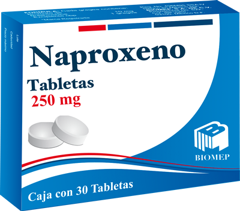

El naproxeno recetado se utiliza para aliviar el dolor, la sensibilidad, la hinchazón y la rigidez causados por la osteoartritis (artritis causada por la descomposición del revestimiento de las articulaciones), artritis reumatoide (artritis causada por la inflamación del revestimiento de las articulaciones), la artritis juvenil (una forma de enfermedad articular en los niños) y espondilitis anquilosante (artritis que afecta principalmente la columna vertebral). Las tabletas, las tabletas de liberación prolongada y la suspensión de naproxeno con receta médica también se usan para aliviar el dolor de hombro causado por la bursitis (inflamación de un saco lleno de líquido en la articulación del hombro), tendinitis (inflamación del tejido que conecta el músculo con el hueso), artritis gotosa (ataques de dolor articular causados por la acumulación de ciertas sustancias en las articulaciones) y dolor por otras causas, incluido el dolor menstrual (dolor que se produce antes o durante un periodo menstrual).
